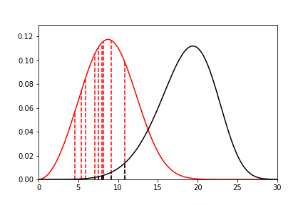
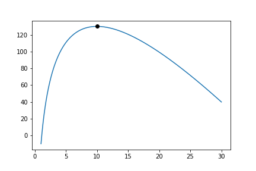
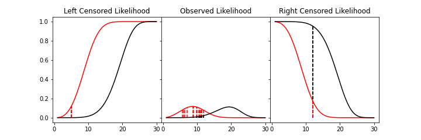

Parametric Estimation
Parametric modelling is the process of estimating the parameters of a particular distribution from a set of data. This is distinct from non-parametric modelling where we make no assumptions about the shape of the distribution. In parametric modelling we make some assumptions, explicit or implied, about the shape of the data that we have.
For this segment I will use the Weibull distribution as the example distribution. The Weibull distribution is a very useful distribution for one interesting reason. It is the distribution for the ‘weakest link.’ As the normal distribution is the limiting distribution of averages, the Weibull distribution is the limiting distribution for minimums. What does that mean? If we have a large number of sets of samples, the averages of these sets will be (approximately) normally distributed, whatever distribution with a finite variance the samples came from. If the samples come from something bounded below – a strength or a lifetime can never be negative – the minimums of these sets of samples will be (approximately) Weibull distributed. (Minimums of quantities with no lower bound, such as normally distributed ones, tend instead to the Gumbel distribution, which is also available in SurPyval as Gumbel; its mirror image, the limit for maximums, is GumbelLEV.) This is analogous to a chain. It is common wisdom that a chain is only as strong as its weakest link. The Weibull distribution enables us to model the strength of a chain based on the strength of the links.
The Weibull distribution can then be used in scenarios where we assume that the shape of the distribution will be due to a weakest link effect. This assumption holds in many scenarios, the strength of materials, the fielded life of equipment, the lifetime of animals, the time until another recession, or the time until germination of seeds. This example makes clear the assumption that we can make when using the Weibull distribution. Other distributions have differing processes that can result in their generation. If we know and understand these processes we can check them against the scenario we are analysing and choose a distribution from them. For example, a lognormal distribution can arise due to the combined effect of the product of random variables so in petroleum engineering the total recoverable oil is a product of the height, width, depth, features of the rock and an infinitude of other variables of the field. Therefore fields can be lognormally distributed. Similar considerations can be applied for many other types of distributions. Finally, If we don’t know, or mind, what distribution we have, we can simply find the best fit amongst a set of distributions.
This page explains how the parameters are found. The companion page, Parametric SurPyval Modelling, shows the code for every capability described here and tabulates the distributions SurPyval provides, and the API reference for each distribution is listed in Parametric.
What a parametric model is
A parametric distribution is a family of curves indexed by a parameter vector \(\theta\). For the Weibull, \(\theta = (\alpha, \beta)\): the scale \(\alpha\) stretches the curve along the time axis and the shape \(\beta\) bends it. Once \(\theta\) is known, every quantity we care about in survival analysis is known too, because they are all tied together:
the CDF, or failure function, \(F(x) = P(X \leq x)\) (
ff);the survival, or reliability, function \(R(x) = 1 - F(x)\) (
sf);the density \(f(x) = \frac{d}{dx}F(x)\) (
df);the hazard rate \(h(x) = f(x) / R(x)\) (
hf), the instantaneous rate of failure among the units still surviving; andthe cumulative hazard \(H(x) = \int_{0}^{x} h(u)\,du = -\ln R(x)\) (
Hf).
Any one of these determines all of the others. That is why, as the Parametric SurPyval Modelling notes show, a completely new distribution can be created from nothing more than its cumulative hazard function. Estimation is the reverse problem: given data, which \(\theta\) should we believe?
The data
Throughout, the data are written the way SurPyval stores them (see Types of Data and Conventions). Observation \(i\) has a value \(x_{i}\), a censoring flag \(c_{i}\), a count \(n_{i}\) of how many units share that row, and a truncation window \((t_{l_{i}}, t_{r_{i}}]\) inside which it had to fall to be recorded at all. The censoring flag is
\(c_{i} = 0\): observed exactly, the event happened at \(x_{i}\);
\(c_{i} = 1\): right censored, the event happened after \(x_{i}\);
\(c_{i} = -1\): left censored, the event happened at or before \(x_{i}\);
\(c_{i} = 2\): interval censored, the event happened inside \((x_{l_{i}}, x_{r_{i}}]\).
An untruncated observation has \(t_{l} = -\infty\) and \(t_{r} = \infty\). The total number of units is \(N = \sum_{i} n_{i}\).
The estimation methods
SurPyval offers users several methods for estimating parameters, these are:
Method of Moments (MOM)
Method of Probability Plotting (MPP)
Mean Square Error (MSE)
Maximum Likelihood Estimation (MLE)
Maximum Product of Spacings (MPS)
There are other methods that can be used, e.g. L-moments or generalised method of moments. These are interesting, and may be added in future, but for now surpyval offers the above estimation methods. Surpyval is unusual in letting you choose the estimation technique; most other survival analysis packages fix the method for you. The advantage of this flexibility will become apparent. The method is chosen with the how argument of fit (how='MLE' is the default).
Each method answers the question “which \(\theta\) fits best?” with a different definition of best, and so each accepts a different range of data. The table below is a map of what the following sections explain; the reasons for every entry are given there.
|
Chooses \(\theta\) to… |
Censoring |
Truncation |
Extras |
Not available for |
|---|---|---|---|---|---|
MOM |
match the sample moments |
none |
none |
offset, |
|
MPP |
fit a straight line on a probability plot |
right with any heuristic; left and interval with |
left with |
offset (no |
Gamma, ExpoWeibull, Beta, Beta4, the discrete distributions, custom distributions |
MSE |
minimise squared distance to the non-parametric CDF |
right, left and interval |
none |
offset, |
|
MLE |
maximise the likelihood |
all |
any, per observation |
offset, |
|
MPS |
maximise the geometric mean of the CDF spacings |
right and left (no interval) |
one common window (scalar |
offset, |
the discrete distributions |
Asking a method for data, options or a distribution outside its row raises an
error rather than returning a quietly wrong answer. Whatever the method, the
fitted model has every function the distribution provides (sf, ff,
df, hf, Hf, qf, …) and its log-likelihood and information
criteria.
As a rule of thumb: use MLE unless you have a reason not to. It takes any data, it is the only method that can fit limited-failure and zero-inflated models, and it is the only one whose fitted model carries a parameter covariance and therefore confidence bounds. Reach for MPS when a parameter sets where the support starts or ends (an offset, the Uniform’s end points) or when an MLE fit struggles. Use MPP when you want a quick, visual, assumption-light fit, or a starting point. MSE and MOM are useful cross-checks and fall-backs.
Method of Moments (MOM)
This method is the simplest (and least accurate) method to find parameters of a distribution. The intent of the Method of Moments (MOM) is to find the closest match of a distribution’s moments to the moments of a sample of data. The intuition is that a distribution’s moments summarise its shape – the first is its centre, the second (about the mean) its spread, the third its skew – so a distribution whose moments agree with the sample’s should look like the sample.
For a given data set, or sample, the kth moment is defined as:
(with counts, each \(X_{i}^{k}\) is simply repeated \(n_{i}\) times, so \(M_{k} = \frac{1}{N}\sum_{i} n_{i} x_{i}^{k}\)).
If the distribution has only one parameter, like the exponential distribution, then the method of moments simply equates the sample moment to the distribution moment. For a continuous distribution the kth moment is defined as:
Where f(x) is the density function of that distribution. Therefore, for the exponential distribution, the moments can be computed (with some working) to be:
Because there is only one parameter of the exponential distribution, we need to only match the first moment of the distribution (k=1) to the first moment of the sample. Therefore we get:
This is to say that the method of moments solution for the parameter of the exponential is simply the inverse of the average. We can check that SurPyval agrees:
import numpy as np
import surpyval as surv
np.random.seed(4)
x = surv.Exponential.random(200, 0.5)
print("1 / mean(x) :", 1 / x.mean())
print("MOM estimate :", surv.Exponential.fit(x, how='MOM').params[0])
1 / mean(x) : 0.46336944498055815
MOM estimate : 0.46336944498055815
This is an easy result. When we extend to other distributions with more than one parameter, we need one equation per unknown: a distribution with \(k\) free parameters is matched on its first \(k\) moments, and an offset adds one more parameter and so one more moment. Such simple analytical solutions are not always available. A few distributions have them – the Uniform, Beta and Beta-Geometric solve their moment equations in closed form, and SurPyval uses those solutions directly when there is no offset and nothing is fixed; an offset LogNormal matches its mean, variance and skewness in closed form too – but in general numeric optimisation is needed. SurPyval uses numeric optimisation to compute the parameters for these distributions.
One closed form is SurPyval’s own choice and worth knowing about: for the
LogNormal, how='MOM' matches the mean and variance of \(\ln x\), not
of \(x\). Those are exactly the parameters \(\mu\) and
\(\sigma^{2}\) of the underlying normal, so the answer is simple and
stable, but it is the same as the maximum likelihood estimate on complete data
rather than the textbook method of moments (which solves
\(E[X] = e^{\mu + \sigma^{2}/2}\) and
\(\mathrm{Var}(X) = (e^{\sigma^{2}} - 1)e^{2\mu + \sigma^{2}}\) for the
raw data and gives slightly different values).
That optimisation matches central moments — the variance, and the skew- and kurtosis-like higher moments about the mean — rather than the raw moments \(E[X^{k}]\), and scales each by the corresponding power of the standard deviation before comparing. Concretely, writing \(\hat{m}_{1}\) for the sample mean, \(\hat{m}_{j}\) (\(j \geq 2\)) for the sample central moments, \(\mu_{j}(\theta)\) for the same quantities of the model and \(\hat{s} = \sqrt{\hat{m}_{2}}\) for the sample standard deviation, the parameters minimise
where \(K\) is the number of free parameters: the distribution’s, plus one
for an offset, less any held with fixed. Every term is dimensionless: the
first is the error in the mean measured in standard deviations, the second the
relative error in the variance, the third the error in the skewness.
The two are equivalent in exact arithmetic, since one set is a binomial transform of the other, but they are not equally easy to optimise. Raw moments of offset data are dominated by the offset: for data sitting near \(\gamma\), every \(E[X^{k}]\) is close to \(\gamma^{k}\), so the moments grow like powers of the offset while the differences that actually identify the shape parameters are swamped. Centring removes that common term and the scaling puts each residual on a comparable footing, which leaves the estimator far better conditioned on shifted data.
The moments of an offset distribution are themselves computed exactly. If \(X = \gamma + Y\), the binomial theorem gives
so only the moments of the un-shifted distribution are needed. Those come from
each distribution’s closed form where one exists, and from numerical
integration otherwise, on the distribution’s own scale so that the answer is
as accurate for data in thousandths as in thousands: the exponentiated Weibull
integrates over \(t = (x/\alpha)^{\beta}\), whose density does not depend
on \(\alpha\), and a CustomDistribution integrates
\(k x^{k-1} R(x)\) (which needs no derivative of the cumulative hazard) in
pieces between its quantiles.
The optimiser (BFGS, on the rescaled search described in
How SurPyval finds the maximum) runs to a tight tolerance and, if the
moments are still not matched, polishes the answer with Nelder-Mead. The
scaling by \(\hat{s}\) applies however many moments are matched – with
one free parameter the objective is the error in the mean in standard
deviations – so the mismatch, and the optimiser’s stopping test with it, is
the same whatever units the data are in. If the scaled mismatch above
is still larger than \(10^{-2}\) SurPyval warns that the parameters may be
unreliable. A healthy fit lands far below that: at about \(10^{-12}\) when
the moment equations have an exact solution, or at about \(10^{-3}\) when
sampling noise means no parameter vector reproduces the sample moments exactly.
If the model’s moments are not finite at all – at the starting point, or
anywhere the search goes – the objective is undefined and SurPyval raises a
ValueError rather than return a fit; pass an init at which the moments
exist, or use MLE.
An offset LogNormal is not searched for at all when it can be solved. Its skewness depends on \(\sigma\) alone, \((w + 2)\sqrt{w - 1}\) with \(w = e^{\sigma^{2}}\), so the sample’s skewness gives \(\sigma\), the variance \(e^{2\mu} w (w - 1)\) then gives \(\mu\) and the mean the offset. The mismatch has a second, spurious minimum with the offset pressed against the smallest observation, and a search could end in either depending on its route. The optimiser takes over only when a parameter is fixed or the solution does not exist – a sample with no positive skew, or one whose solution puts the offset at or above the smallest value.
Fixing a parameter (fixed=) reduces \(K\): a fixed parameter is known,
so it needs no equation of its own. A Weibull with \(\beta\) fixed at 2,
for example, is fitted to the sample mean alone, with \(\alpha\) the one
unknown, and matches it exactly.
The method of moments, although interesting, can produce incorrect results, and it can only be used with observed data, so it cannot account for truncation or censoring. It is also statistically inefficient: higher sample moments are dominated by the few most extreme observations, so they are noisy, and for heavy-tailed distributions (a LogLogistic with a small shape, say) the higher moments may not even exist. With an offset, matching three moments to three parameters is close to unidentifiable, so treat offset MOM fits with care. But it is good to understand as it is one of the oldest methods used to estimate the parameters of a distribution, and it is a quick cross-check on complete data.
Method of Probability Plotting (MPP)
Probability plotting is an extremely simple way to find the parameters of a distribution. This method has a long history because it is a simple activity to do while providing an easy to understand graphic. Further, probability plotting produces a good estimate for the parameters even with few data points. All this combined with the fact that probability plotting can be used for all types of data, observed, censored, and truncated, it is easy to understand why it is widely used.
It also has a property that no other method here has: it needs no initial guess. Apart from a few closed-form cases, every other estimator is solved by a numeric optimiser, and a numeric optimiser has to start somewhere. That makes probability plotting an excellent way to seed the other methods, and many SurPyval distributions (the Weibull, Normal, Gumbel, Logistic and LogLogistic among them) build the starting point for their other fits this way; others use a quick moment estimate instead. But the method itself can be sufficient for the majority of applications.
So how does it work?
Probability plotting works off the idea that a distribution’s CDF can be made into a straight line if the data is transformed. This can be shown by rearranging the CDF of a distribution. For the Weibull:
If we negate, add one, and then take the log of each side we get:
Then take the log again:
From here, we can see that there is a relationship between the CDF and x. That is, the log of the log of (1 - CDF) has a linear relationship with the log of x. Therefore, if we take the log of x, and take the log of the negative log of 1 minus the CDF and plot these, we will get a straight line whose slope is \(\beta\) and whose intercept is \(-\beta\ln\alpha\). To make this work, we therefore need a method to estimate the CDF empirically. Traditionally, there have been heuristics used to create the CDF. However, we can also use the non-parametric estimate as discussed in the Non-Parametric Estimation section. Concretely, we can use the Kaplan-Meier, the Nelson-Aalen, Fleming-Harrington, or Turnbull estimates to approximate the CDF, F(x), transform it, plot, and then do the linear regression. SurPyval uses as a default, the Nelson-Aalen estimator for the plotting point.
Other methods are available. The simplest estimate, for complete data, is the empirical CDF:
This equation says, that (for a fully observed data set) for any given value, x, the estimate of the CDF at that value is simply the sum of all the observations that occurred below that value divided by the total number of observations. This is a simple percentage estimate that has failed at any given point. This equation will therefore make a step function that increases from 0 to 1.
One issue with this is that the highest value is always 1. But if this is transformed as above, this will be an undefined number (\(\ln(-\ln 0)\)). As such, you can adjust the value with a simple change:
By using this simple change, the highest value will not be 1, and will therefore be plottable, and not undefined. There are many different methods used to adjust the simple ECDF to be used with a plotting method to estimate the parameters of a distribution. For example, consider Blom’s method:
Where k is the rank of an observation k is in (1, 2, 3, 4…. n) for n observations. Using these methods we can therefore plot the linearised version above.
Fitting a distribution this way — the probability-plotting method with a chosen heuristic — is nothing more than a straight-line fit through the transformed points, and the slope and intercept give the parameters. For the Weibull the line is \(y = \beta\ln x - \beta\ln\alpha\), so \(\beta\) is the slope and \(\alpha = e^{-\text{intercept}/\beta}\). We can do it by hand with Blom’s positions and check that SurPyval does the same thing:
np.random.seed(8)
x = np.sort(surv.Weibull.random(20, 10., 2.)) # alpha = 10, beta = 2
n = len(x)
rank = np.arange(1, n + 1)
F = (rank - 0.375) / (n + 0.25) # Blom's plotting positions
slope, intercept = np.polyfit(np.log(x), np.log(-np.log(1 - F)), 1)
print("by hand : alpha =", np.exp(-intercept / slope), " beta =", slope)
model = surv.Weibull.fit(x, how='MPP', heuristic='Blom')
print("how='MPP':", model.params)
model.plot(heuristic='Blom')
by hand : alpha = 11.056774846353477 beta = 1.8415053052469188
how='MPP': [11.05677485 1.84150531]
<Axes: title={'center': 'Weibull Probability Plot'}, xlabel='Time', ylabel='Fraction failed'>

The two agree exactly, and with twenty points they land near the
\(\alpha = 10\), \(\beta = 2\) used to simulate the data. On the plot
the axes are already transformed (a log scale for \(x\), and the
double-log scale labelled with CDF values), so the fitted Weibull is the
straight line and the points are the Blom positions. SurPyval has the option to use many different plotting methods, including the regular KM, NA, and FH non-parametric estimates. All you need to do is change the heuristic parameter; the rank-based ones SurPyval includes are:
Method |
A |
B |
|---|---|---|
Blom |
0.375 |
0.25 |
Median |
0.3 |
0.4 |
ECDF |
0 |
0 |
ECDF_Adj |
0 |
1 |
Mean |
0 |
1 |
Weibull |
0 |
1 |
Modal |
1 |
-1 |
DPW |
1 |
0 |
Midpoint |
0.5 |
0 |
Benard |
0.3 |
0.4 |
Beard |
0.31 |
0.38 |
Hazen |
0.5 |
0 |
Gringorten |
0.44 |
0.12 |
Larsen |
0.567 |
-0.134 |
Tukey |
1/3 |
1/3 |
None |
0 |
0 |
Which is used with the general formula to estimate the plotting position heuristic:
Some names are synonyms: 'ECDF' and 'None' are the raw empirical CDF
\(k/n\), and 'Mean', 'Weibull' and 'ECDF_Adj' are all
\(k/(n + 1)\), the expected value of the \(k\)-th uniform order
statistic. 'Median' and 'Benard' are both Benard’s
approximation to the median rank, \((k - 0.3)/(n + 0.4)\). Any point with \(\hat{F} = 0\) or \(1\) (the top point of
'ECDF', for example) cannot be transformed and is left out of the fit.
One final option available is that of the Filliben estimate ('Filliben'),
an approximation to the median of each uniform order statistic:
The last group of options are the non-parametric estimators themselves:
'Nelson-Aalen' (the default), 'Kaplan-Meier', 'Fleming-Harrington'
and 'Turnbull' (see Non-Parametric Estimation).
Censoring and truncation in a probability plot
A right-censored unit has no failure time to plot, but it still matters: it tells us that a unit survived past \(x_{i}\), so the units that fail later must be ranked higher than their raw position suggests. The rank heuristics above therefore adjust the ranks of the failures that follow a censored unit (the “mean order number” adjustment), and the non-parametric estimators handle right censoring natively through their risk sets.
Left- and interval-censored data do not have ranks at all, so they need the
Turnbull estimator (heuristic='Turnbull'), which spreads each censored
unit’s probability over the times where it could have failed. Truncation
changes the risk set rather than the ranks, so left-truncated data needs one of
the estimators ('Nelson-Aalen', 'Kaplan-Meier',
'Fleming-Harrington' or 'Turnbull') and right-truncated data needs
'Turnbull'. The Turnbull estimator is expensive, so when
heuristic='Turnbull' is asked for data with no left or interval censoring
and no right truncation, SurPyval uses the estimator named by
turnbull_estimator (Fleming-Harrington by default) directly, which is
what Turnbull reduces to on such data. A pitfall: when every observation shares the same truncation
window, the non-parametric estimate cannot tell how much probability lies
outside that window, so a probability plot of such data runs from about 0 to
about 1 inside the window and the fitted line ignores the truncation. The
Parametric SurPyval Modelling notes show this and how MLE avoids it.
Details of the regression
Once the points are transformed, the line is found by least squares. By
default (rr='y') the vertical distances are minimised, i.e. the
transformed CDF is regressed on the transformed x; rr='x' minimises the
horizontal distances instead. A plotting position at a time where nothing
failed (a time at which units were only censored, such as the end of a test)
carries no failure; on_d_is_0=False (the default) leaves such points out
of the regression and on_d_is_0=True keeps them.
An offset (offset=True, see below) cannot be read off a line, because
shifting \(x\) bends the plot. SurPyval therefore searches for the shift
\(\gamma < \min(x)\) that makes the transformed points most linear – it
maximises their Pearson correlation – and then fits the line to
\(x - \gamma\). The search is over the log of the distance below
\(\min(x)\) measured in the data’s mean spacing, so that it is the same
search whatever units the data are in, and it is finished by a bracketed
Brent search, because the correlation is very flat near its peak. (The Exponential and Rayleigh, whose plots stay straight
under a shift, read \(\gamma\) off the line’s intercept instead; should
that land at or past the first failure, the offset is set just below it and the
line refitted.) Here \(\min(x)\) is the smallest value whose failure was
seen – exact, left or interval censored – so that every such observation
stays inside the support.
Probability plotting has real weaknesses. The transformation stretches the
tails, so a least-squares line gives the extreme points far more influence
than they deserve; the plotting positions are not independent, so the
regression carries no honest measure of uncertainty (MPP fits have no
confidence bounds); and parameters cannot be fixed. Some distributions have no
straight-line transform at all. The Gamma’s CDF is the regularised incomplete
gamma function with the shape inside the special function, so the only
linearising axis depends on the shape you are trying to estimate; the same is
true of the exponentiated Weibull and of the Beta and four-parameter Beta.
SurPyval refuses how='MPP' for those rather than guess an axis, and it
refuses it for the discrete distributions too, whose step-shaped CDFs cannot be
linearised. (A fitted Gamma can still be drawn on a probability plot, since
by then the parameters are known.) A CustomDistribution knows only its
cumulative hazard, so it has no transform either: its plots use plain linear
axes, and how='MPP' is refused for it with a ValueError.
Mean Square Error (MSE)
MSE is essentially the same as probability plotting. Instead of finding the minimum against the transformed data in the x and y axes. The parameters are found by minimising the distance to the non-parametric estimate without transforming the data to be linear. Mathematically, MSE find the parameters by minimising:
This is the difference between the, untransformed, empirical estimate of the CDF and the parametric distribution.
More precisely, \(\hat{F}\) is the Fleming-Harrington estimate of the CDF (or, when there are left- or interval-censored observations, the Turnbull estimate with Fleming-Harrington survival), evaluated at each distinct time \(x_{j}\) in the data, and the objective is
with \(\gamma = 0\) unless an offset is requested. The heuristic
argument does not apply to MSE: it always uses this estimate. Each distinct
time contributes one term, however many units share it; the counts enter only
through the non-parametric estimate \(\hat{F}\).
Why bother, when probability plotting already fits a curve to the same points? Because MSE works on the probability scale, where every point is measured in the same units. The double-log transform of a Weibull plot turns a CDF difference of 0.001 in the far tail into a large vertical gap; MSE sees it as the 0.001 it is. MSE is therefore less driven by the few most extreme points, and it works for any distribution with a CDF, including those that have no probability-plot transform (Gamma, exponentiated Weibull, Beta) and the discrete distributions.
Like MPP, MSE handles censoring through the non-parametric estimate, so right,
left and interval censoring are all accepted. It does not yet support
truncation (SurPyval raises NotImplementedError), and like MPP it carries
no likelihood-based measure of uncertainty, so an MSE fit has no confidence
bounds. The minimisation is done with BFGS using the automatic gradient, on
the rescaled search described in How SurPyval finds the maximum, escalating to Newton-CG and then to the derivative-free Nelder-Mead if a method
fails.
Maximum Likelihood Estimation (MLE)
Maximum Likelihood Estimation (MLE) is the most widely used, and most flexible of all the estimation methods. Its relative simplicity (because of modern computing power) makes it the reasonable first choice for parametric estimation. What does it do? Essentially MLE asks what parameters of a distribution are ‘most likely’ given the data that we have seen. Consider the following data and distributions:

The solid lines are the densities of two different Weibull distributions. The dashed lines represent the data we have observed, their height is the density of the two distributions at the x value for each observation. Given the data and the two distributions, which one seems to explain the distribution of the data better? That is, which distribution is more likely to produce, if sampled, the dashed lines? It should be fairly intuitive that the red distribution is more likely to do so. For example, the observation just above 10, you can see the height to the black line and the height to the red line. The red line is taller than the black line, therefore this observation is more ‘likely’ to have come from the red distribution than the black one. Conversely, the value near 15 is more likely to have come from the black distribution than the red one because the height to the black line is greater than the height to the red line. To find the distribution of best fit then we need to find the parameters that best averages the height of all these lines.
MLE formalises this concept by saying that the most likely distribution is the one that has the highest (geometric) mean of the height of the density function for each sample of data. The height of the density at a particular observation is known as the likelihood. Mathematically, (for uncensored data) MLE then maximises the following:
f is the pdf of the distribution being estimated, x is the observed value, theta is the parameter vector, and L is the geometric mean of all the values. This is complicated, but a simplification is available by taking the log of this product yielding:
Therefore MLE simply finds the parameters of the distribution that maximise the average of the log of the likelihood for each point… One final transform that is used in optimisers is that we take the negative of the above equation so that we find the minimum of the negative log-likelihood.
Dividing by \(n\) does not move the maximum, so it makes no difference to
the answer whether the average or the sum is maximised. SurPyval works with the
sum, the log-likelihood \(\ell(\theta) = \sum_{i} n_{i} \ln f(x_{i} \mid \theta)\)
(counts simply multiply each term), and model.neg_ll() reports
\(-\ell(\hat{\theta})\), the total negative log-likelihood at the fitted
parameters. The sum is what the information criteria and the confidence bounds
below are built on.
Armed with the log likelihood we can then search for the parameter where the log likelihood is maximised. Using an Exponential distribution as an example, we can see the change in the value of the log likelihood as the exponential parameter changes. The following is a random sample of 100 observations with a parameter of 10. Then changing the value of the parameter ‘lambda’ from low to high we can see what the log-likelihood is and find the value at which it is maximized.

On the chart above you can see that the maximum is near 10. As we would expect given that we know that the answer is 10. It is this simple and intuitive approach that allows the parameters of distributions are estimated with the MLE.
Censored data
What about censored data?
All the equations above are for observed data. Handling the likelihood of censored data also has an intuitive understanding. What we know about the point when the data point is censored is that we know it is above or below the value at which we observed. So for a censored point, its contribution to the likelihood is the probability of what we did see: that the point was right censored (it survived to that time, the survival function), left censored (it had already failed, the CDF), or interval censored (it failed somewhere in the interval, the difference of two CDF values). Formally, the log-likelihood is a single sum over every observation, with each term chosen by that observation’s censoring flag:
It is one sum over all \(N\) units, not an average taken separately within each type of observation. (Averaging each group by its own size would give a handful of censored units the same total weight as hundreds of failures, and would move the maximum.)
This is not a special SurPyval formula: we can rebuild a fitted model’s likelihood by hand from the distribution functions and get exactly the number the model reports.
x = [2, 4, 5, [6, 8], 9, 11, 12]
c = [-1, 0, 0, 2, 0, 0, 1]
model = surv.Weibull.fit(x, c)
alpha, beta = model.params
W = surv.Weibull
ll = (np.log(W.df(np.array([4., 5., 9., 11.]), alpha, beta)).sum() # observed
+ np.log(W.sf(12., alpha, beta)) # right censored
+ np.log(W.ff(2., alpha, beta)) # left censored
+ np.log(W.ff(8., alpha, beta) - W.ff(6., alpha, beta))) # interval
print("by hand :", -ll)
print("neg_ll() :", model.neg_ll())
by hand : 16.521401799676745
neg_ll() : 16.52140179967674
An easy and intuitive way to understand this is to compare these two possibilities. With some randomly generated data with a few values made to be left censored, and a few to be right censored. We get:

In this example, again, we need to consider whether the red or black distribution is a more likely description of the observations, including some censored ones. Although the right censored point for the black distribution is very likely, this does not mean it is a good fit because the ‘average’ across all observations is poor. Therefore, it should be obvious that the red distribution is the better fit.
Truncated data
Truncated data is handled with the same logic, but on the conditional likelihood. A truncated observation was only observable because it fell inside its truncation window \((t_{l}, t_{r}]\), so each contribution is renormalised by the probability of landing in that window:
for exactly observed values (a censored value puts its own probability in the numerator, as in the next section). This inflates the contribution of observations from a narrow window, correcting for the units that could never have been seen — exactly the delayed-entry (left-truncation) and right-truncation adjustments. With no right bound, \(F(t_{r}) = 1\) and the denominator is the survival \(R(t_{l})\); with no left bound, \(F(t_{l}) = 0\). Because each observation carries its own window, a late entry into a study (a different \(t_{l}\) per unit) is handled exactly.
A window in the upper tail (\(F(t_{l}) > 1/2\)) is computed from the survival function in log space, \(\ln R(t_{l}) + \ln(1 - R(t_{r}) / R(t_{l}))\), rather than as a difference of two numbers near 1. Once \(F(t_{l})\) rounds to 1 that difference is 0: a LogNormal left-truncated at 1 with \(\mu = -5, \sigma = 0.6\) had a log-likelihood of \(+\infty\) instead of \(-23.73\), which could win a search, and truncated fits depended on the units the data were recorded in. The same applies to an interval-censored observation’s window.
In the lower tail the difference \(F(t_{r}) - F(t_{l})\) keeps its digits, but the CDFs themselves underflow: a window whose probability is below the smallest normal float (about \(2 \times 10^{-308}\)) is computed from the CDF in log space instead, \(\ln F(t_{r}) + \ln(1 - F(t_{l}) / F(t_{r}))\). A Normal far above truncated windows had log-likelihoods that were rounding (-9.67 where the supremum is -10.03) or \(-\infty\), and windows of exactly 0 made the truncation term NaN, which ended its searches.
Censored and truncated data
The two combine. An observation can be both censored and truncated: a unit that entered a study late and was still running when it ended, or the right-truncated failure of an instrument that can only record events below some threshold. Such a point must be conditioned on its own window, so a right-censored observation inside \((t_{l}, t_{r}]\) contributes
and a left-censored one contributes the mirror image with \(F(x) - F(t_{l})\) on top. The numerator matters: it must be capped by the truncation bound rather than run out to infinity as \(R(x)\) does. A ratio of \(R(x)\) to the window probability is not a probability at all — it grows without bound as the fitted distribution puts less and less mass inside the window, so an optimiser can drive the likelihood arbitrarily high and return a meaningless answer while reporting success.
SurPyval sidesteps this by rewriting the observation rather than special-casing
the likelihood. A right-censored point with a finite \(t_{r}\) is recast as
the interval \((x, t_{r}]\), and a left-censored point with a finite
\(t_{l}\) as \((t_{l}, x]\), before the likelihood is ever evaluated.
The expressions above are then just the ordinary interval-censored contribution,
already conditioned by the truncation denominator. Where the relevant bound is
infinite there is nothing to cap, and the point stays a plain censored
observation so that the numerically stable log_sf is used.
This rewriting happens inside surpyval’s internal representation of the data.
The x, c, n and t arrays you passed to fit are unchanged, and
the model reports the data back to you exactly as you supplied it.
Exact solutions: closed-form MLE
For a few distributions the maximum can be found with pen and paper, and SurPyval uses the exact answer instead of an optimiser whenever the data allow it:
Exponential, with exact and right-censored data (and any left truncation): setting the derivative of \(\ell = d \ln\lambda - \lambda \sum_{i} n_{i}(x_{i} - t_{l_{i}})\) to zero gives
\[\hat{\lambda} = \frac{d}{\sum_{i} n_{i} (x_{i} - t_{l_{i}})} = \frac{\text{number of failures}}{\text{total time on test}},\]where \(d\) is the number of exact failures and an untruncated unit enters at time zero. Left truncation only moves the start of each unit’s exposure; left or interval censoring and right truncation make the equation transcendental, so those fits use the optimiser.
Normal, with complete, untruncated data: \(\hat{\mu}\) is the sample mean and \(\hat{\sigma}\) the standard deviation dividing by \(N\) (not \(N - 1\)).
LogNormal: the Normal solution applied to \(\ln x\).
Uniform: \(\hat{a} = \min(x)\) and \(\hat{b} = \max(x)\), for exactly observed data (truncated or not). With right- or left-censored values it is no longer the MLE: a unit known to survive past \(r\) contributes \((b - r)/(b - a)\), which grows with \(b\), so the maximum of the likelihood can have \(b\) well above the largest value (and, for left censoring, \(a\) below the smallest). There is no general closed form then, but the likelihood vanishes the moment \(a\) passes the smallest exact or left-censored value or \(b\) the largest exact or right-censored one, and the maximum usually sits on one of those edges. Without left censoring \(a\) is on its edge (the likelihood only improves as it rises), and \(b\) is the root of the likelihood’s derivative beyond the largest value, or that value itself; without right censoring, symmetrically; with both, \(b\) is profiled out and the same search is made for \(a\). That includes data whose largest value is right censored: with \(N\) units, \(k\) of them censored at \(r\) above every failure and \(\hat{a}\) the smallest failure, \(\hat{b} = (N r - k \hat{a})/(N - k)\). It refuses interval-censored data, data with no exactly observed value (any range containing the censoring points then explains them equally well), and truncated data whose censored values pull a bound to the truncation point, beyond which the truncated likelihood is flat.
A request for an offset, a limited failure population, zero inflation or any
fixed parameter adds structure that these formulas do not solve, so such fits
always go to the optimiser. A closed-form fit reports optimizer as
'closed-form':
x = np.array([2., 3., 5., 8., 13.])
c = [0, 0, 1, 0, 1] # three failures, two survivors
tl = [0, 1, 1, 2, 0] # late entries
model = surv.Exponential.fit(x, c, tl=tl)
print("fitted rate :", model.params[0])
print("failures / time :", 3 / np.sum(x - np.array(tl)))
print("optimizer :", model.optimizer)
fitted rate : 0.1111111111111111
failures / time : 0.1111111111111111
optimizer : closed-form
How SurPyval finds the maximum
Everywhere else the likelihood is maximised numerically, in five steps. It is worth knowing what they are, because they explain the warnings you may see.
A starting point. Unless you pass
init, each distribution builds its own initial guess – from a probability plot for many, from a quick moment estimate or a rule of thumb for others, and for aCustomDistribution, which knows nothing about its parameters, from the best log-likelihood on a coarse grid of magnitudes. Interval-censored points are imputed at their midpoints and left-censored points half way to the smallest value, for this purpose only. An offset starts below the smallest value by the data’s mean spacing (their range over \(n - 1\)), a step that scales with the data, and the other parameters are seeded from the data shifted by that start; a limited-failure \(p\) at the Nelson-Aalen estimate of the fraction failed (capped at 0.6), and a zero-inflation \(f_{0}\) at the observed fraction of zeros.More than one start, when it matters. Some likelihoods have more than one maximum, and the default start can lie nearer the worse one. For a limited failure population without zero inflation (where \(p\) and the failure distribution trade off, see below) SurPyval also starts from the failures alone, fitted as a complete sample (an interval-censored failure at its interval’s midpoint), with \(p\) at the observed failure fraction; for a
CustomDistributionit also tries the plain default of each parameter (1 above a lower bound, the middle of a finite interval, 0 if unbounded). Each start is optimised and the fit with the best likelihood is kept. These alternatives are tried for an MLE fit withoutfixed. Aninityou give is tried first and then the default start (and, where the answer is not verifiably a maximum, its alternatives), keeping the best likelihood: from a start far from the maximum the search can stall where the likelihood only looks level, so a poorinitcannot return a worse model than noinitwould have.Removing the bounds. Most parameters are constrained: a Weibull \(\alpha\) must be positive, a probability must lie in \((0, 1)\), an offset must sit below the smallest observation. Rather than use a constrained optimiser, SurPyval maps each parameter \(\theta\) to an unbounded variable \(u\) and searches that unbounded space:
bounded on one side, say \(\theta > L\): \(u = \ln(\theta - L)\) close to the bound (\(\theta - L < 1\)) and \(u = \theta - L - 1\) further away, a smooth map that is logarithmic where the bound matters and linear where it does not (and the mirror image for an upper bound);
bounded on both sides, \(a < \theta < b\): a scaled inverse hyperbolic tangent, \(u = 10\,\mathrm{artanh}\left(2\frac{\theta - a}{b - a} - 1\right)\), for any finite interval (a probability’s \((0, 1)\), or whatever bounds a custom distribution declares);
unbounded: \(u = \theta\).
The one-sided map is taken in units of each parameter’s own starting distance from its bound – \(u = \ln((\theta - L) / d_{0})\) below \(d_{0} = \theta_{0} - L\) and linear above it – rather than in units of 1, so every such parameter starts at \(u = 0\). With a unit of 1 the switch sits at a fixed value, so the offset’s distance below the smallest observation, or a scale, was searched as a log for data in thousandths and linearly for data in thousands: a different search at every scale, and along the ridge an offset fit has (below) not always one that found the same optimum. Offset fits made the change first; since v0.22 every fit does, and a fit to data in millionths and one to the same data in millions now take the same steps (the fitted quantiles agree to about 1e-15, where they differed by up to 2e-6).
The likelihood’s gradient and Hessian come from automatic differentiation (
autograd), which is why custom distributions must useautograd.numpy.An optimiser ladder. BFGS runs first; if its answer is not verifiably a maximum SurPyval tries TNC, then Newton-CG, then the derivative-free Nelder-Mead and Powell, each starting from the best point so far (Nelder-Mead also from the initial guess). It stops at the first rung after which the best point is a maximum: the gradient is zero (every component below \(10^{-4}\) in the rescaled units described next) and the Hessian is positive definite. An optimiser’s own “success” is not enough: from a start far from the maximum a gradient method reports it where the likelihood first looks flat – a Weibull started at \(\alpha = 10^{7}\) stopped at \(\beta = 0.099\), 40 below the maximum log-likelihood – and BFGS often reports a loss of precision at the maximum. If no rung is verified the first rung that reported success is kept, as before.
A likelihood with no finite maximum leaves the ladder nothing to verify: it keeps rising as a parameter runs off towards a limit no member of the family reaches (an ExpoWeibull whose \(\mu\) grows without end approaches a Fréchet distribution; a Normal fitted to rows whose windows are all bounded above has a mean that grows without end). Each rung then ran until its own limit, and the fit ended “unverified” after all five: 23 s for an ExpoWeibull on 60 interval censored rows. So, as the regression fits do, SurPyval checks the point a search reached – after the first rung that stops short of a verified maximum, and in BFGS after 100, 200, 400, … iterations – for a parameter along whose profile (the likelihood maximised over the others) Newton’s method cannot converge, where that profile is flat to the verification’s tolerance and the parameter is heading for an infinite end of its range. An offset fit whose offset runs down towards \(-\infty\) (its shape making up for it) is heading for its family’s limit there – a Normal for the LogNormal and the Gamma, the smallest extreme value distribution (
Gumbel) for the Weibull, theLogisticfor the LogLogistic – and the likelihood may approach the limit’s only as \(1 / |\gamma|\), never flat on the way; there the limit fitting the data at least as well as the point reached takes the place of flatness (an offset LogNormal and Gamma on data with a long left tail ran every rung for 4-17 s, and now stop after the first in 0.3 s). A later rung’s point heading that way is checked too: the first rung can stop somewhere unrelated, and a later one run off. And where a rung ends unverified with the offset moved down and neither the point it reached nor any offset on the way there (a profile of the likelihood over the offset, read at up to eight offsets between the search’s start and that point) fitting the data better than the limit, the offset is taken to be running off: far out, Newton’s test reads derivatives that are rounding, and it missed an offset LogLogistic at \(\gamma = -6.9 \times 10^{4}\) on a smallest extreme value sample. That ends the ladder at the rung that finds it (left skewed LogLogistic samples took 1,000 to 3,000 likelihood evaluations to reach the verdict at the end of the ladder, and now 200 to 400). A point, or an offset on the way, that fits better than the limit is never called a runaway, however flat the profile: the likelihood then has a maximum short of the limit, which an offset LogNormal 0.012 above the Normal had been denied. “Better” is beyond a relative tolerance of \(10^{-7}\), since far out the likelihood is computed to rounding. If one is running off, the search stops there, the fit warns “No finite maximum”, naming it (and the limit, where the family knows it), andmaximumis'no finite maximum'; that ExpoWeibull now takes 6 s. A verified answer is checked the same way, since a likelihood that flattens towards its supremum can pass the verification far out on the way to it. A parameter running onto a finite bound of its range (an Exponential’s offset onto the first failure) is a maximum on the edge of the space, not a runaway.An offset running onto the first failure where the density at its origin is infinite (a Weibull, Gamma or LogLogistic shape below 1) is no maximum either: the likelihood is unbounded there. Data without truncation give it no way back, since with such a density every term of the likelihood rises as the offset moves up. A rung that gets there ends the ladder, and so does the first rung stopping on its way there (its line search failing on the steepening rise) with the offset moved up from its start: the ladder ends with the offset on the first failure, and the fit warns “No finite maximum” and recommends
how='MPS'. The remaining rungs used to follow it into the corner, in 5,000 to 15,000 likelihood evaluations (2-8 s), and ended “unverified”, “MLE Failed” or “No finite maximum” as the last of them happened to stop. (An interior maximum, where there is one, has a shape above 1, since below 1 the likelihood rises with the offset everywhere. Where one start of a fit, the default or one given withinit, finds a verified maximum and another runs into the corner, the maximum is kept.)A parameter bounded at both ends – a limited-failure \(p\), a zero-inflation \(f_{0}\) – reaches its bound in floating point long before its \(u\) reaches infinity: \(p\) is exactly 1 once \(u\) passes about 190. There the likelihood no longer depends on \(u\), its gradient and curvature in it are zero or rounding, and the test of the gradient and Hessian says nothing about it. Such a parameter is judged on its bound instead: it is a maximum there when the likelihood (the other parameters as fitted) does not rise as it moves off the bound by more than the same tolerance, per observation, and the other parameters must pass the test without it. Where the likelihood rises off the bound at all, the fit is also started with that parameter at the middle of its range, and the better answer kept. Without this, a Weibull with
lfp=Truefitted to monthly return counts of a 3% defective sub-population ran \(p\) to 1 and reported a verified maximum 3.8 below the one at \(p = 0.059\) (#579).Before BFGS runs, the search is rescaled coordinate by coordinate, each \(u\) divided by the magnitude of its starting value, and the objective is divided by the number of observations. That does not move the optimum, but it makes the convergence test mean the same thing whether your data are measured in hours or seconds, and for ten observations or a million. A starting value near zero cannot set its own unit, so each coordinate has a floor that suits the space it is searched in: 1 for a bounded parameter, whose \(u\) is (for values near the bound) the log of its distance from the bound and so already in relative units, and the data’s standard deviation, capped at 1, for an unbounded one, whose \(u\) is the parameter itself, in the data’s units. The result is that fits are equivariant under a change of units, in either direction: fitting \(k x\) gives the fit to \(x\) with every scale or location parameter multiplied by \(k\) (a rate divided by it, a log-location shifted by \(\ln k\)) and every shape parameter unchanged – to five significant figures or better for any \(k\) from \(10^{-4}\) to \(10^{5}\). MPS, MSE and MOM search the same way, dividing by the objective’s starting magnitude instead: their objectives are dimensionless, so that magnitude does not change with the data’s units. Offset fits are equivariant too: their start and their search (step 3) are in the data’s units, and the offset itself is multiplied by \(k\).
Checks. Before fitting, SurPyval refuses data that cannot pin the parameters down: if there are fewer distinct non-right-censored values than free parameters the likelihood has a flat (or unbounded) direction and no unique answer exists. Fixing a parameter buys back a degree of freedom. An MLE fit also refuses data that a single failure time explains completely – an exact value at 0.5 and a value known only to be below 1, or the intervals \((1, 3]\) and \((2, 4]\) – for the families that can concentrate on one point (a location or scale with a free shape, or any of them with an offset): a distribution ever more concentrated there explains the data ever better, so the likelihood has no maximum, and the fit used to return wherever the search stopped (a Weibull \(\beta\) of 396, a Normal \(\sigma\) of \(5 \times 10^{-324}\)). After fitting, a non-finite parameter is never returned (SurPyval raises a
ValueErrorinstead). If every optimiser fails SurPyval warns (“MLE Failed; returning the optimiser’s starting point …”) and returns the starting point, which for many distributions is the probability-plot fit; if the answer kept is not verifiably a maximum it warns (“did not reach a verified maximum”, with the optimiser’s loss of precision as the reason where it reported one), as it can for the four-parameter Beta, whose likelihood is unbounded as a shape below 1 meets an end point at the data’s extreme. The optimiser that found the answer is recorded inmodel.optimizer('closed-form'for the exact solutions above), and what it reached inmodel.maximum:'verified'(or exact),'unverified'(the fit warned that it is not verifiably a maximum) or'no finite maximum'(the fit warned “No finite maximum”); a fit by another method, or a model built withfrom_params, has'not applicable'.fit_bestreads it to set such fits aside.
Offsets (threshold parameters)
Many lifetimes cannot begin at zero: a part is guaranteed to survive its burn-in, a material has a minimum strength. An offset (or threshold, or location) \(\gamma\) shifts a distribution supported on \([0, \infty)\) so that it starts at \(\gamma\) instead:
where \(F_{b}\) and \(f_{b}\) are the CDF and density of the
un-shifted, base distribution (the subscript \(b\) is used for the
base distribution throughout the next three sections). This is
how the “three-parameter Weibull” or “two-parameter exponential” are built:
offset=True adds \(\gamma\) as one extra parameter. Every term of the
likelihood simply uses \(x - \gamma\) (and truncation bounds are shifted
the same way), and \(\gamma\) is constrained to lie below the smallest
observation. Offsets only make sense on a half-line support: a distribution on
the whole real line (Normal, Gumbel, Logistic) is already free to move, and one
with a bounded support (Beta) would stop being a member of its family if only
one end moved – use Beta4 to estimate both ends instead. Offsets are
also a continuous-time idea: the discrete lifetimes below count cycles from
one, and offset=True is not supported for them.
An offset is available with every estimation method, and each handles it in its own way (MPP by maximising the straightness of the plot, MOM with the binomial expansion above, MPS and MSE by shifting the data). But threshold parameters are statistically awkward. \(\gamma\) trades off against the shape and scale, so the likelihood is flat along a ridge, and for shapes that make the density infinite at the origin (a Weibull with \(\beta < 1\)) the likelihood grows without bound as \(\gamma\) approaches the smallest observation – the MLE is then not even defined. This is where MPS, below, earns its place. For the same reason a fitted \(\gamma\) carries no standard error: the regularity conditions behind the Wald approximation fail for a threshold, so SurPyval holds \(\gamma\) at its estimate when it computes confidence bounds for the other parameters.
Limited failure populations
Sometimes only part of a population can fail from the cause being studied: a defect affects only the units that carry it, a disease only those susceptible. No matter how long we wait the failure curve levels off below one. A limited failure population (LFP), or defective subpopulation, model captures this with a proportion \(p\) of units that are susceptible [Meeker1987lfp]:
As \(x \to \infty\) the survival levels off at \(1 - p\), the fraction that never fails. The likelihood is built from these functions exactly as before: an observed failure contributes \(\ln p + \ln f_{b}(x)\), a survivor \(\ln(1 - p + p R_{b}(x))\). The last term is the heart of the model: a unit still running at the end of the test is either a susceptible unit that has not failed yet or one that never will, and the likelihood weighs both possibilities.
lfp=True adds \(p\) as a parameter. Two cautions. First, \(p\) is
only identifiable if the data are followed long enough for the failure curve
to be seen levelling off; with short follow-up a small \(p\) with a short
life and a large \(p\) with a long life explain the data equally well.
The trade-off also shapes the likelihood surface. When the failures seen so
far are only the start of a slowly rising curve, \(F_{b}(x) \approx
(x/\alpha)^{\beta}\) for a Weibull with a huge \(\alpha\), and
\(p F_{b}(x) \approx p\,\alpha^{-\beta} x^{\beta}\) depends on
\(p\) and \(\alpha\) only through one combination. The likelihood then
has a long, nearly flat ridge on which the curve never levels off, and an
optimiser started on it can stop there. On Meeker’s integrated-circuit data
(surpyval.datasets.load_meeker_lfp, 28 failures among 4156 units on a
1370-hour test) the default start is on that ridge and, on its own, stops at
\(p = 0.116\) with a negative log-likelihood of 302.9, while the real
maximum, almost ten log-likelihood units better, is at \(p = 0.0067\) with
a curve that does level off. That is why SurPyval starts an LFP fit from more
than one point (step 2 above) and keeps the better; the
Parametric SurPyval Modelling notes show both.
Second, because the model is written through its likelihood, only MLE can fit
it. Two consequences worth knowing: any quantile at or above \(p\) is
infinite, because that proportion of units never fails; and for the same
reason the mean lifetime, mean(), is infinite (as are var() and
moment(n)). mean(defective=True) is the defective mean
\(p\,E[X_{b}]\) (plus the offset, if any, inside the expectation), in
which a never-failing unit contributes nothing. Neither is the mean life of
the susceptible units, which is the mean of the base distribution,
\(E[X_{b}]\).
Zero inflation
The mirror image of units that never fail is units that have failed before we start: dead on arrival, broken in shipping, seeds that never germinate. A continuous distribution gives zero probability to failing at exactly zero, so these units need their own mass. A zero-inflated (ZI) model puts a proportion \(f_{0}\) of the population at \(x = 0\). With both features the general form SurPyval uses is
so \(p\) is the total proportion that ever fails (including the
\(f_{0}\) that fail at once) and \(p - f_{0}\) is the proportion that
fails from the continuous distribution. Without LFP, \(p = 1\); without
ZI, \(f_{0} = 0\); without an offset, \(\gamma = 0\). In the
likelihood, each observation at exactly \(x = 0\) contributes
\(\ln f_{0}\), and every other observed failure
\(\ln\left[(p - f_{0}) f_{b}(x - \gamma)\right]\). So that df gives
the likelihood’s terms, df(0) of a zero-inflated model is the mass
\(f_{0}\) itself, a probability rather than a density;
df(x, continuous=True) is the continuous part alone, which integrates to
\(p - f_{0}\). The zero mass sits at zero even for an offset model, and
nothing fails before zero. A unit known only to have failed by \(t\)
(left censored at \(t\), or an interval \([0, t]\)) may have failed
at zero, so it contributes \(\ln\left[f_{0} + (p - f_{0})
F_{b}(t - \gamma)\right]\), the mass included (Moulton and Halsey 1995;
Braekers and Grouwels 2016); an interval that opens above zero leaves the
mass out. A left truncation at or below zero truncates nothing (see
Conventions). zi=True requires a distribution whose support starts at
zero, and like LFP it can only be fitted by MLE.
Discrete distributions
Everything so far has assumed that time is continuous. Many lifetimes are counts instead: the number of cycles, demands or inspections until failure. For a lifetime \(T\) on the integers the functions change meaning slightly, and it is worth being precise because the continuous intuition misleads here:
dfis the probability mass \(P(T = k)\), not a density;sfis \(R(k) = P(T > k)\), soffis \(P(T \leq k)\);hfis the discrete hazard \(h(k) = P(T = k) / R(k - 1)\), the probability of failing on cycle \(k\) given survival of the first \(k - 1\); it is a probability, never more than one;Hfis still \(H(k) = -\ln R(k)\), which is not the sum of the discrete hazards: \(H(k) = -\sum_{j \leq k} \ln(1 - h(j))\).
k = np.arange(1, 6)
p = 0.2 # a Geometric lifetime: each cycle fails with probability 0.2
G = surv.Geometric
print("P(T = k) :", G.df(k, p))
print("h(k) :", G.hf(k, p))
print("P(T = k)/R(k - 1) :", G.df(k, p) / G.sf(k - 1, p))
print("H(k) :", G.Hf(k, p))
print("cumsum of h(k) :", np.cumsum(G.hf(k, p)))
P(T = k) : [0.2 0.16 0.128 0.1024 0.08192]
h(k) : [0.2 0.2 0.2 0.2 0.2]
P(T = k)/R(k - 1) : [0.2 0.2 0.2 0.2 0.2]
H(k) : [0.22314355 0.4462871 0.66943065 0.89257421 1.11571776]
cumsum of h(k) : [0.2 0.4 0.6 0.8 1. ]
The likelihood follows directly: an exact failure on cycle \(k\) contributes \(\ln P(T = k)\); a unit still working after cycle \(k\) (right censored) contributes \(\ln P(T > k)\); a left-censored one \(\ln P(T \leq k)\); and an interval \((a, b]\) contributes \(\ln\left[F(b) - F(a)\right] = \ln P(a < T \leq b)\). Truncation divides by the probability of the window exactly as before.
MLE, MSE and MOM all work for the discrete distributions. For the
Beta-Geometric, whose moments are infinite unless the shape \(a\) exceeds
the moment’s order, MOM solves the two moment equations in closed form; a
solution exists only when the sample is more dispersed than a Geometric with
the same mean (the Beta mixing can only add dispersion), and SurPyval raises a
ValueError otherwise. MPP does not work for any of them, since a
step-shaped CDF cannot be linearised, and MPS does not either: spacings are
increments of a continuous CDF, and repeated integer values make them
degenerate. The Geometric, Negative Binomial, discrete Weibull, Beta-Geometric
and discretised continuous distributions live on \(\{1, 2, \dots\}\), so
the value zero is free to carry a zero-inflation mass; the Poisson and Binomial
include zero in their support and so cannot be zero inflated.
Some models are simple enough to need no optimiser at all, and have their own,
narrower fit:
Bernoulli, a single pass/fail outcome with \(P(X = 1) = p\), and FixedEventProbability, a probability \(p\) of the event with no time axis: \(\hat{p}\) is the (count-weighted) proportion of ones.
Binomial, the number of events in a known number of trials \(m\): \(\hat{p} = \sum_{i} n_{i} x_{i} / (m \sum_{i} n_{i})\).
For these three the bounds on \(p\) come from the \(k\) events in \(N\) trials. By default they are exact (Clopper and Pearson): the lower bound is the \(\alpha\) quantile of \(\mathrm{Beta}(k, N - k + 1)\) (0 when \(k = 0\)) and the upper the \(1 - \alpha\) quantile of \(\mathrm{Beta}(k + 1, N - k)\) (1 when \(k = N\)). With \(k = 0\) the upper bound is \(1 - \alpha^{1/N}\), the success-run bound.
ExactEventTime, an event known to occur at a single time \(T\), estimated from right-censored (“not yet”) and left-censored (“already”) observations: every \(T\) between the latest “not yet” and the earliest “already” has likelihood one, and SurPyval reports the midpoint.
InstantlyOccurs and NeverOccurs have no parameters at all; they are the degenerate limits (all mass at zero, all mass at infinity) that turn up as components of larger models.
Uncertainty: confidence bounds
A point estimate is only half an answer; we also need to know how far to trust it. The likelihood tells us. Near its maximum the log-likelihood is shaped like an upside-down bowl: a sharply curved bowl means the data pin \(\theta\) down tightly, a flat one means many values fit almost equally well. The curvature is measured by the Hessian (the matrix of second derivatives) of the negative log-likelihood, the observed information \(I(\hat{\theta})\), and large-sample theory says the estimate is approximately normally distributed with covariance
SurPyval computes this Hessian by automatic differentiation in the unbounded space the optimiser searched and maps it back to the parameters with the delta method: if \(\theta = g(u)\) then \(\mathrm{Cov}(\hat{\theta}) \approx J\,\mathrm{Cov}(\hat{u})\,J^{T}\) with \(J\) the Jacobian of \(g\). User-fixed parameters carry no variance, the offset \(\gamma\) is held at its estimate (see above), and \(p\) and \(f_{0}\) are included. Only a likelihood fit has this curvature to measure, so confidence bounds are available only for models fit by MLE (including the closed forms). The Uniform is the exception that proves the rule: its MLE sits on the edge of the support rather than at the top of a bowl, so it has no covariance and SurPyval declines to give bounds.
Wald bounds on a parameter (param_cb, the default method='wald')
use the standard error \(se = \sqrt{\mathrm{Var}(\hat{\theta})}\) and the
normal quantile \(z\). A symmetric interval
\(\hat{\theta} \pm z\,se\) could stray outside a parameter’s valid range,
so it is built on a scale where the parameter is unbounded and mapped back:
for a parameter bounded to \((0, \infty)\) on the log scale,
\(\hat{\theta}\exp(\pm z\,se/\hat{\theta})\); for one bounded to
\((0, 1)\), such as \(p\) and \(f_{0}\), on the logit scale; and
for any other parameter on the natural scale,
\(\hat{\theta} \pm z\,se\) (which, for a parameter with some other
bound, can cross it). The offset \(\gamma\) has no standard error, so it
has no param_cb.
np.random.seed(3)
x = surv.Weibull.random(15, 10, 2)
model = surv.Weibull.fit(x)
beta = model.params[1]
se = np.sqrt(model.covariance()[1, 1])
z = 1.959964 # the 97.5% normal quantile
print("by hand :", beta * np.exp(np.array([-z, z]) * se / beta))
print("param_cb :", model.param_cb('beta'))
by hand : [1.42133107 3.20842444]
param_cb : [1.42133107 3.20842442]
Wald bounds on a function (cb) apply the delta method once more, to a
function of the parameters: the variance of \(\hat{R}(x)\) is
\(\nabla R\,\mathrm{Cov}(\hat{\theta})\,\nabla R^{T}\). The interval is
formed on the scale on which the distribution is a straight line in (log)
time – its probability-plot scale – which also keeps it inside
\((0, 1)\): \(\ln H = \ln(-\ln R)\) for the Weibull, Exponential,
Rayleigh and Gumbel, the normal quantile \(\Phi^{-1}(F)\) for the Normal
and LogNormal, and the logit \(\ln(F/R)\) for the Logistic, the
LogLogistic and every distribution with no such scale. For the Weibull,
On the straight-line scale \(a\,s - b\) (with \(s\) the (log) time) the band is the envelope of the lines of the parameters’ Wald ellipsoid, so it rises with time whenever the slope’s – the shape’s – own Wald interval excludes 0. The logit scale used for every distribution before v0.22 had no such property: on small samples its bound on \(F\) could fall in a tail, 0.39 at \(t = 5\) and 0.00004 at \(t = 10\) on one six-point Weibull fit. With fewer failures than it takes for the shape’s interval to exclude 0, only the likelihood-ratio band below is sure to be monotone.
Bounds on \(F\) and \(H\) follow from those on \(R\) (\(F = 1 - R\), \(H = -\ln R\)), and bounds on the hazard and density are formed on the log scale so they stay positive – on the logit scale for a discrete distribution, whose hazard \(h(k) = f(k)/R(k - 1)\) and mass are probabilities. Where the hazard or density is 0 (below an offset, say) both bounds are 0.
A Wald bound needs a positive variance. Where the inverse of the observed
information has a negative variance – it is not positive definite, typically
because an estimate is on or near a boundary of the parameter space – or
where an estimate sits on the edge of its support, no Wald bound exists:
param_cb and cb return nan there, with a warning saying why. A
likelihood-ratio bound (below) does not need the variance.
Likelihood-ratio (profile) bounds (method='lr') avoid the bowl
approximation altogether and read the interval straight off the likelihood.
For a parameter, the profile likelihood \(\ell_{p}(\theta_{j})\) is the
best log-likelihood attainable with \(\theta_{j}\) held at a given value
and the other parameters re-optimised; the interval is every value whose
deviance is small enough,
with \(\chi^{2}_{1, 1 - \alpha}\) the \(\chi^{2}\) critical value with one degree of freedom. For a function such as \(R(x)\) the bound at each \(x\) is the most extreme value of the function over all parameter vectors inside that same likelihood region. These bounds are invariant to how the model is parameterised, respect the parameter’s range naturally, and are usually better calibrated than Wald bounds in small or heavily censored samples, which is why they are the reliability-engineering convention. They cost more (every bound is an optimisation) and they need the original data. For an offset, limited-failure-population or zero-inflated model the region is over every fitted parameter, the offset \(\gamma\), the proportion \(p\) and the zero-inflation fraction \(f_0\) among them, so their uncertainty is in every bound, and they are bounded themselves.
\(p\) and \(f_0\) have a closed edge, \(p = 1\) and \(f_0 = 0\), where the model is the plain one, and their estimates can sit on it. A side of the interval towards the edge is the edge itself whenever the deviance there is within the critical value. When the truth is on the edge, the deviance there is a 50:50 mixture of 0 and \(\chi^{2}_{1}\) asymptotically (Self and Liang, 1987), so a two-sided interval covers it with probability \(1 - \alpha/2\) and a one-sided bound towards it with \(1 - \alpha\). With the estimate on the edge the other side is found by walking out in the parameter itself, where the deviance has curvature, rather than in its logit, which puts the edge at infinity.
The offset \(\gamma\) is a threshold: as it reaches the first failure
the likelihood is unbounded for a shape below 1 (Smith, 1985). Where the
deviance stays below the critical value all the way to the first failure,
the interval on \(\gamma\) runs up to it, the region holds points of
any likelihood, and the bounds on functions of the model at that level are
nan, with a warning. The \(\chi^{2}_{1}\) calibration also needs the
likelihood to be regular, as an offset Weibull’s is for a shape above 2.
The interval is the stretch of values around the estimate whose deviance
stays below the critical value. Where the profile levels off below it on
the way to the edge of the parameter’s space, no value out to the edge is
excluded, and the bound is the edge itself: 0, 1 or inf. This happens
when the model tends to a simpler one at that edge. A NegativeBinomial
tends to a (shifted) Poisson as \(r \to \infty\); if the Poisson’s
deviance from the fit is below the critical value, the upper bound on
\(r\) is inf. A band likewise reaches the edge of the function’s
range (0 or 1 for \(R\)) when the region reaches that far.
The region can also run out along a long, flat valley towards such an edge (an ExpoWeibull’s as \(\beta \to \infty\) with \(\alpha\) at the largest observation, or as \(\alpha \to 0\)), and a band’s or a quantile’s extreme can lie far down it, or be approached only at the end of the search’s range for the parameter (where it is no longer a double distinct from the edge). The search follows each parameter’s profile down such valleys before seeking the extreme there. Each bound is then taken exactly onto the region’s boundary from where the search ended, and along the boundary to where the function is most extreme, so it is the function’s value at a point of the region: where the extreme is reached at a point (inside the parameters’ space, or on the edge of a parameter’s range such as a Uniform’s smallest observation) the bound is that extreme to about one part in \(10^{12}\). Where the extreme is only approached down a valley, the bound is as close to it as the parameters can be followed there in double precision: a few parts in \(10^{9}\) for a NegativeBinomial’s Poisson limit, where \(1 - p\) is about \(10^{-8}\), and a few parts in \(10^{7}\) for an ExpoWeibull’s. Where a search is still moving out when it stops, the bound returned is the most extreme point of the region it found, with a warning saying so.
Comparing models: information criteria
The log-likelihood also lets us choose between models. A model with more parameters will always fit at least as well, so the comparison must penalise complexity. With \(k\) the number of parameters of the model (the distribution’s own, plus \(\gamma\), \(p\) and \(f_{0}\) when the model has them),
where \(\mathrm{nll} = -\ell(\hat{\theta})\) is neg_ll() and
\(d\) is the sample size of both corrections, defined by one rule used by
every model in SurPyval that reports a BIC or an \(\mathrm{AIC_{c}}\):
Note
The sample-size rule. \(d\) is the number of observed
failures: the exact, left-censored and interval-censored observations,
each weighted by its count n. Right-censored observations, which have
not failed, are left out. If there is no observed failure, \(d\) is
the number of observations (again weighted by n) instead, so the
criteria stay finite.
Univariate parametric, mixture, Royston-Parmar and regression models (including frailty and time-varying-covariate fits) count units. A time-varying-covariate subject is one unit however many intervals its follow-up is split into, and it counts as a failure when its last interval ends in one.
Recurrent-event models count observed events: each exact event, and every event in a left- or interval-censored count. The end-of-observation rows are not events.
Copula models count joint rows in which at least one series failed; a row right-censored in every series adds nothing.
Semi-parametric models – Cox (including its stratified and time-varying fits and the cause-specific competing-risks model), Cox frailty and proportional odds – count the events, as R’s
logLik.coxphdoes (itsnobsisnevent); a Fine-Gray model counts the events of its cause of interest, the terms of its weighted partial likelihood. Their criteria are on the partial (Cox), integrated (Cox frailty), profile (proportional odds) or weighted partial (Fine-Gray) likelihood, with \(k\) the estimated coefficients (and a Cox frailty’stheta), so they compare models of the same kind fitted to the same data – two sets of covariates, say – not a semi-parametric model with a parametric one.
Using the failures rather than all units follows [Volinsky2000bic]: a
censored unit carries less information than a failure. For exact and
right-censored data, \(d\) is the number of exact failures. Counting only
exact failures, as some models once did, made \(d = 0\) and the BIC
\(-\infty\) for purely interval-censored data. Because every model
counts the same way, a univariate fit, a regression and a recurrent-event model
of the same data penalise with the same \(d\), and their criteria differ
only through their likelihoods and parameter counts.
\(\mathrm{AIC_{c}}\) exists only for \(d > k + 1\); otherwise
aic_c() returns nan.
Lower is better. Because the likelihood is a property of the parameters and the
data, not of how they were found, these criteria are available after a fit by
any method (but not for a model built with from_params, which has no
data). \(k\) is the number of estimated parameters – the
distribution’s, plus gamma, lfp_p and f0 when they are fitted – so a
parameter held with fixed is not counted: a Weibull with its shape fixed is
penalised as the one-parameter model it is, and scores exactly as the
equivalent Rayleigh does.
Every fitted model that reports these spells them the same way (#572):
neg_ll(), aic(), aic_c() and bic() are methods, and
log_likelihood, where a model has it, is the number \(\ell(\hat{\theta})\).
Two pitfalls. Compare only models fitted to the same data. And do not compare a discrete model with a continuous one this way: a probability mass and a probability density are measured in different units, so their likelihoods are not on the same scale.
Maximum Product of Spacings (MPS)
Maximum product of spacings — also called maximum spacing estimation, after Cheng & Amin [Cheng1983mps] and, independently, Ranneby [Ranneby1984mps] — is a close cousin of MLE that repairs the situations where MLE misbehaves. Where MLE maximises the geometric mean of the density heights at each observation, MPS maximises the geometric mean of the gaps between the CDF values of the ordered data.
The intuition is this. If a distribution really did generate the data, then pushing the observations through its own CDF, \(u_{i} = F(x_{i} \mid \theta)\), should produce values that look uniformly spread across \([0, 1]\) — this is the probability integral transform. A good fit is therefore one whose ordered CDF values are spaced as evenly as possible, and MPS makes that precise by scoring the spacings between consecutive ordered CDF values.
Order the observations \(x_{(1)} \leq x_{(2)} \leq \dots \leq x_{(n)}\) and define the spacings
with the conventions \(F(x_{(0)}) = 0\) and \(F(x_{(n+1)}) = 1\) for the two end gaps. There are \(n + 1\) spacings and, because \(F\) runs from 0 to 1, they always sum to one. MPS chooses the parameters that maximise their geometric mean,
or, taking logs and negating for the optimiser exactly as we did for MLE,
Because a geometric mean is largest when its terms are equal, this is maximised when the spacings are as uniform as possible — precisely the “evenly spread” condition above. We can look at the spacings of a fitted model directly; they always sum to one, and on a small sample they are far from equal, which is exactly the randomness the estimator has to average over:
np.random.seed(1)
x = np.sort(surv.Weibull.random(8, 10, 2))
model = surv.Weibull.fit(x, how='MPS')
u = model.ff(x)
D = np.diff(np.concatenate([[0], u, [1]]))
print("spacings :", D.round(3))
print("sum :", D.sum())
spacings : [0.019 0.389 0.079 0.045 0.1 0.03 0.043 0.14 0.155]
sum : 1.0
Why bother, when MLE already works so well? The answer is those two end spacings, \(D_{1} = F(x_{(1)}) - 0\) and \(D_{n+1} = 1 - F(x_{(n)})\). They let MPS “see” the room beyond the smallest and largest observations — information MLE simply throws away. This matters most when a parameter controls where the distribution’s support starts or ends: an offset (three-parameter) distribution, or a finitely bounded one such as the Uniform. There the likelihood is badly behaved, because MLE can drive the density to infinity by sliding the support boundary right up against the most extreme data point — a degenerate, unbounded likelihood. MPS cannot be fooled this way: pushing the boundary onto \(x_{(1)}\) forces the first spacing \(D_{1}\) to zero, and \(\ln 0 = -\infty\) is the worst possible score, so the estimator is pulled back to a sensible interior solution. This is exactly why, in the Parametric SurPyval Modelling notes, how='MPS' places the Uniform’s end points outside the sample instead of on its extremes, and fits an offset Log-Logistic to ten points on which the MLE fails.
Censoring, ties and truncation
Censoring, ties and truncation are folded in with the same reasoning used for the likelihood. A right- or left-censored point contributes its survival \(R(x \mid \theta)\) or CDF \(F(x \mid \theta)\) — all we know is that the true value lies beyond the one we saw — and repeated (tied) observations contribute density terms, so exact ties do not collapse a spacing to zero. Left and right truncation are handled by renormalising the spacings over the observation window: every CDF value is rescaled as \(\left(F(x) - F(t_{l})\right) / \left(F(t_{r}) - F(t_{l})\right)\) before the gaps are taken, so the spacings again run over a unit interval, now conditional on the observation having fallen inside the window. This renormalisation is what lets surpyval fit right-truncated data with MPS, which the plotting-based estimators handle only through the Turnbull estimate and MSE and MOM do not handle at all.
Written out in full, with \(W = F(t_{r}) - F(t_{l})\) the probability of the window, SurPyval minimises
where the \(m + 1\) normalised spacings are taken over the \(m\) distinct observed failure times. It is a single sum, so every unit carries the same weight whatever kind of observation it is; dividing by \(N\) only scales the objective. With an offset, the data and the truncation bounds are shifted together.
The construction also sets MPS’s limits. Spacings need one ordering of the
data within one window, so the truncation must be common to every observation
(scalar tl and tr, not per-unit entry times), and there is no spacing
for an interval, so interval-censored data must use MLE (or MPP with the
Turnbull heuristic). Spacings are increments of a continuous CDF, so MPS is not
available for discrete distributions. And MPS has no likelihood curvature to
offer, so an MPS fit carries no confidence bounds (its neg_ll and
information criteria are still available). The objective is minimised with
BFGS with the automatic gradient, on the rescaled search described in
How SurPyval finds the maximum, escalating to Newton-CG and then to the
derivative-free Nelder-Mead if needed; if that too fails,
SurPyval warns (“MPS FAILED: Try alternate estimation method”). The product
of spacings of an offset fit can have no finite maximum as the likelihood can:
on data skewed more to the left than any member of the family, the offset
runs down towards \(-\infty\) and the family approaches its limit (the
Normal for the LogNormal and the Gamma, the Logistic for the
LogLogistic, the Gumbel for the Weibull). Where BFGS stops short with
the offset moved down and the limit’s own MPS fit spacing the data at least
as well, the fit stops there and warns “No finite maximum”, recommending the
limit.
Trading the density for spacings costs nothing asymptotically: under the usual regularity conditions MPS is consistent and asymptotically as efficient as MLE, attaining the same asymptotic variance. Its advantage is that it stays consistent in the awkward cases — J- or U-shaped densities, and distributions with unknown support — where the maximum likelihood estimate is inconsistent or fails to exist at all. In surpyval it is requested with how='MPS' and, like every other estimator, returns a fully-featured model (see the Parametric SurPyval Modelling notes for the code). This makes it a robust fall-back whenever an MLE fit struggles with an offset or a bounded support.
References
Cheng, R. C. H. and Amin, N. A. K. (1983). Estimating parameters in continuous univariate distributions with a shifted origin. Journal of the Royal Statistical Society: Series B (Methodological), 45(3), 394-403.
Ranneby, B. (1984). The maximum spacing method. An estimation method related to the maximum likelihood method. Scandinavian Journal of Statistics, 11(2), 93-112.
Meeker, W. Q. (1987). Limited failure population life tests: application to integrated circuit reliability. Technometrics, 29(1), 51-65.
Volinsky, C. T. and Raftery, A. E. (2000). Bayesian information criterion for censored survival models. Biometrics, 56(1), 256-262.